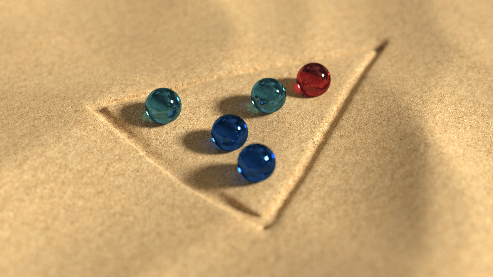
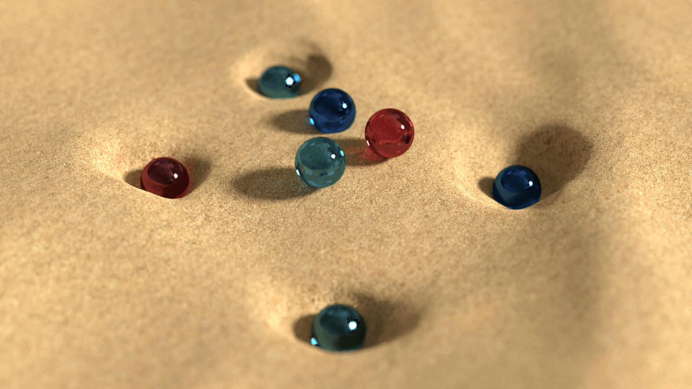
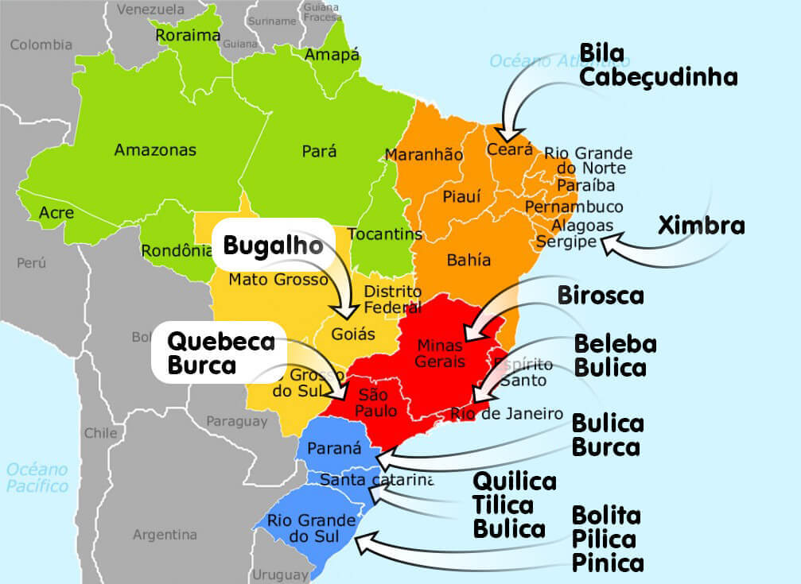

Esta Realidade aumentada apresenta um slide show, do mapa do Brasil para contextualizar os alunos sobre como a bolinha de gude é chamada nos diferentes contextos do país.
Jogando Bolinha de gude

TRIÂNGULO: ESTÁ FORMA DE JOGAR É A MAIS TRADICIONAL E CONHECIDA EM TODO O BRASIL. AS BOLINHAS DE GUDE FICAM POSICIONADAS NO TRIÂNGULO, PODENDO FICAR DENTRO OU NA LINHA. O OBJETIVO É TIRAR AS BOLINHAS DO TRIÂNGULO E NÃO DEIXAR A SUA CAIR NA LINHA OU DENTRO DELE.

BULICA: FORMADA POR UM OU MAIS BURACOS NO CHÃO, ESTE JOGO APRENSENTA UMA VARIAÇÃO DE JOGAR BOLINHA DE GUDE. O OBJETIVO É FAZER COM QUE A BOLINHA CAIA DENTRO DA BULICA (BURACO), DEPOIS, VOCÊ PODERÁ ACERTA A BOLINHA DO COLEGA E PEGA-LÁ.

NO BRASIL PODEMOS ENCONTRAR DIFERENTES NOMES ASSOCIADOS A BOLINHA DE GUDE, ASSIM COMO, DIFERENTES FORMAS DE BRINCAR.